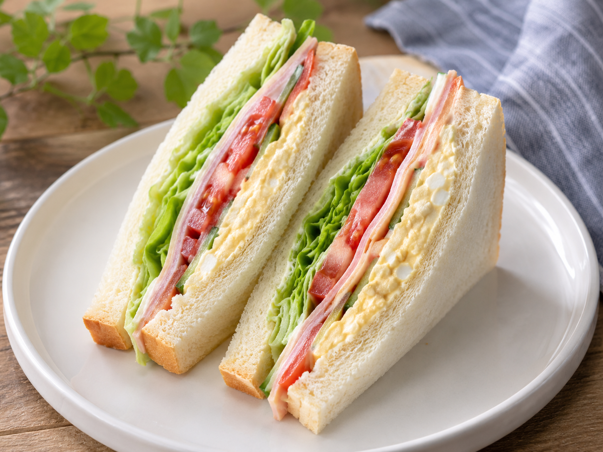

<p>画像の生成に使ったプロンプト</p>

<a href="https://example.com">サンドイッチ</a> © 1999 by <a href="https://example.com">ユニバース</a> is licensed under <a href="https://creativecommons.org/licenses/by/4.0/">CC BY 4.0</a><img src="https://mirrors.creativecommons.org/presskit/icons/by.svg" alt="" style="max-width: 1em;max-height:1em;margin-left: .2em;
